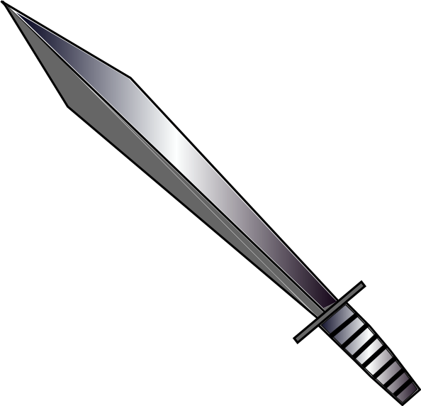

Titanic
År 1912
Kristningen av Norge
År 1030
Columbus' reise til India
År 1492
Den Trojanske hest
Ca. År 1200 F.V.T

“A rocket will never be able to leave the earth’s atmosphere.” - The New York Times (1936)
"I think there is a world market for maybe five computers." - Thomas Watson, chairman of IBM, 1943
“The Americans have need of the telephone, but we do not. We have plenty of messenger boys.” — Sir William Preece, Chief Engineer, British Post Office, 1878
"A ship sail against the wind and currents by lighting a bonfire under her deck? I pray you, excuse me, I have not the time to listen to such nonsense.” — Napoleon 1800s
“It will be an easy matter to convert a truckload of iron bars into virgin gold.” - Thomas Edison (1911)



De store knappene kan du trykke på for å tas videre til et scenario.
Trykk på kartet når du er klar til å gå videre! Forresten, du kan trykke på meg for å restarte.
De sa den var "usynkelig". Hehe.
Hvem hadde trodd at man kunne putte så mange voksne menn inn i en så liten hest?
Ja, så feil kan man ta… Columbus ville finne en raskere handelsrute til India, men traff på indianerne på Bahamas først. Skulle hatt GPS.
Tja, vi kan vel si at man ikke kan bli kvitt tusenvis av år av tro over natten! Det var uansett en tragisk hendelse vi kan lære av.